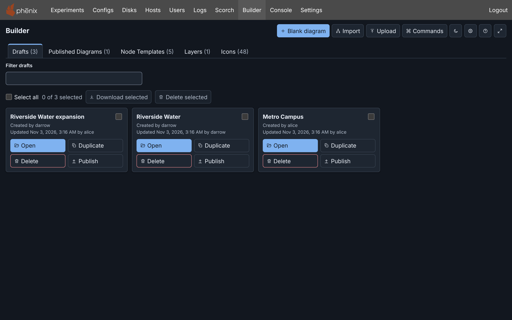
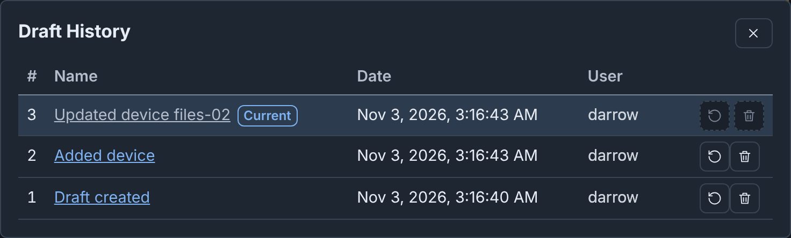
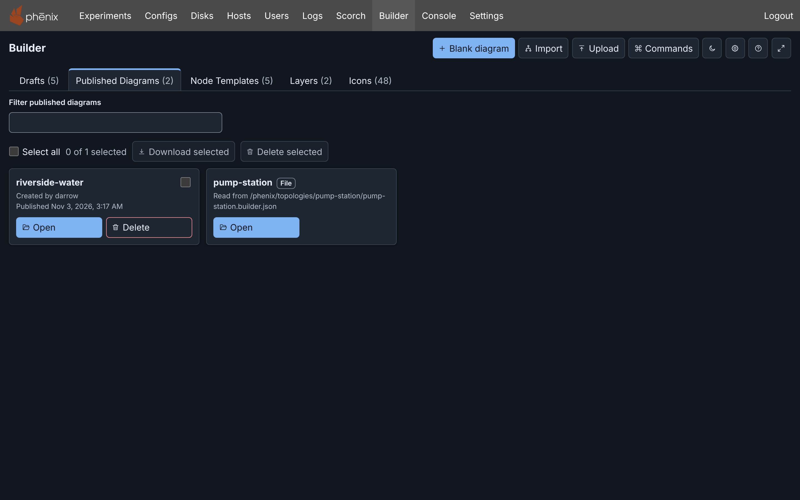
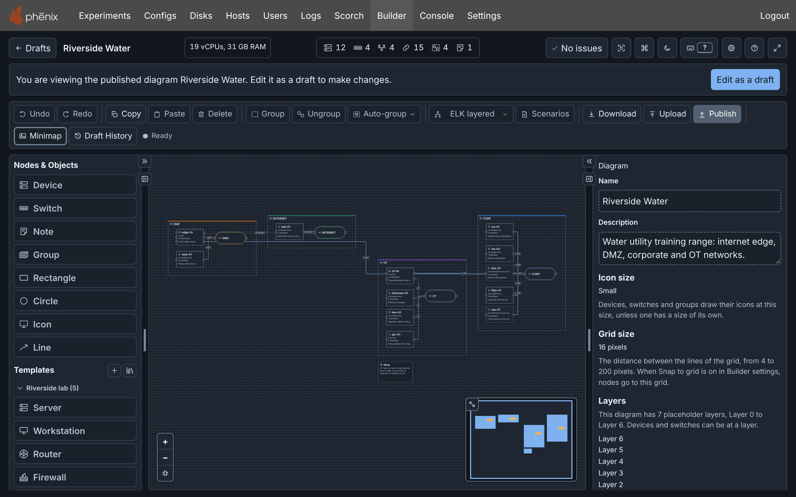
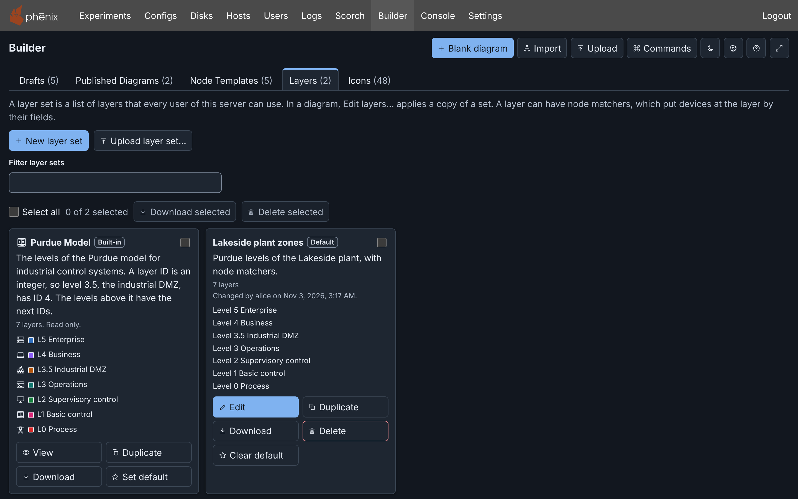
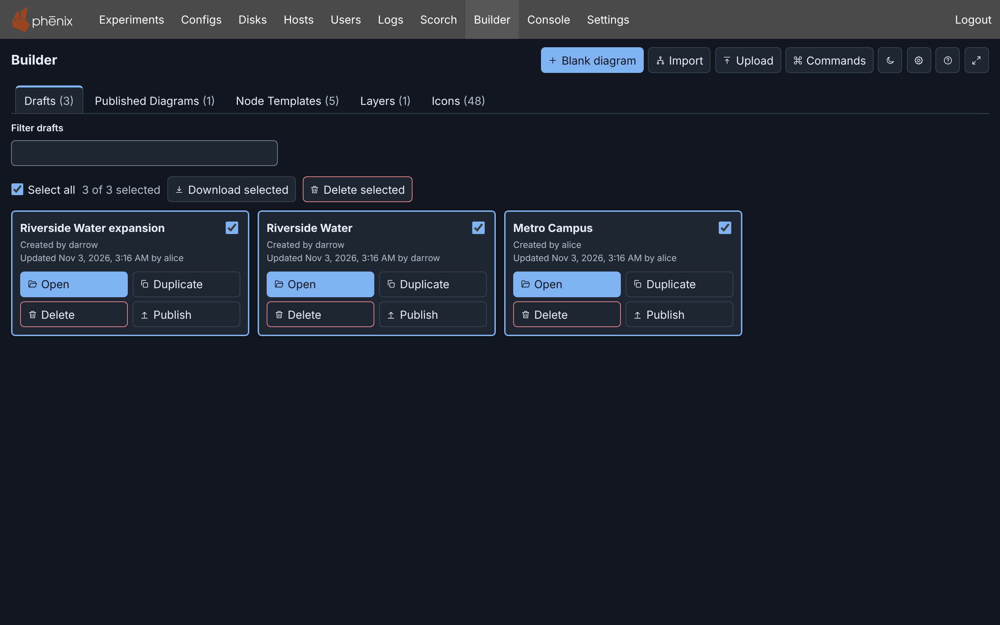
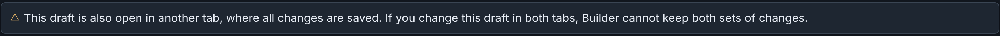
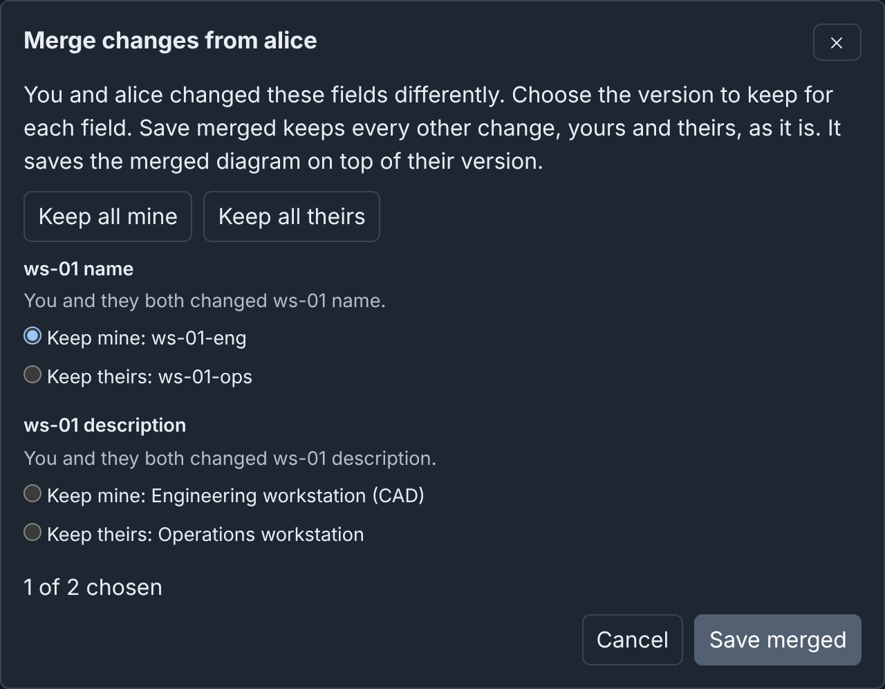

Drafts: details¶
Info
This page holds every rule, limit and message of this feature. For the short guide, see Drafts.
Each diagram in Builder is a draft on the phenix server. A draft is separate from the standard phenix configs. Builder saves each change to the draft as a snapshot. Builder makes a phenix Topology config only when you Publish (see Publishing).
The drafts page¶
This is the default page when you open Builder.

Top right buttons¶
Blank diagram, Import and Upload start a new draft (see Creating a draft).
Commands opens the command palette (⌘+K on macOS, Ctrl+K on Windows and Linux).
The theme, Settings, Help and Focus mode buttons work the same as in the editor.
- Theme: Dark, Light, or System (the light or dark appearance of your device).
- Settings: opens Builder settings.
- Help: opens this documentation in a new tab.
- Focus mode: full-screen mode for focused editing (see Focus mode).
Tabs¶
Each tab shows a count of its items, for example Drafts (3):
- Drafts: the drafts of all users, most recently changed first. Damaged drafts come last.
- Published Diagrams: the topologies that have a Builder diagram (see Published diagrams).
- Node Templates: the template library. Its count includes only the library templates. The built-in templates and the server collections are under Show.
- Layers: the layer set library, with the built-in set Purdue Model.
- Icons: the icon library and the built-in icons. Its count includes both built-in and custom icons.
Each Builder user can open, change and delete each draft (see Permissions).
A draft card shows the name of the draft, its creator, and its last change and that user, for example "Updated Sep 29, 2026, 1:02 PM by alice". The card has a checkbox (see Selecting several drafts), Open, Duplicate, Delete, and Publish.
"Updated" is the last activity on the draft: an edit, an undo, a restore, a deleted snapshot or a publish. It can differ from Last edited in the Inspector on the Editor page, which shows when Builder saved the content (see With nothing selected).
Item buttons¶
The buttons that act on one item, such as a draft or a layer set, look the same in all of Builder:
| Button | Icon | Color |
|---|---|---|
| Edit | Pencil | Blue |
| Delete | Trash can | Red |
| Publish | Arrow up | Default |
| Duplicate | Two sheets | Default |
| Open | Open folder | Blue |
| View | Eye | Default |
| Download | Arrow down | Default |
An item that you cannot change has View in place of Edit.
Filtering the lists¶
The Drafts, Published Diagrams, Node Templates and Layers tabs each have a filter field above their cards, for example Filter drafts. A line under the field shows the count, for example "2 of 12 drafts shown.".
The filters can search by:
- Filter drafts and Filter published diagrams: the name or user (this searches users who created or last changed a draft).
- Filter layer sets: the name or description.
- Filter templates: the name and what
t:in the command palette finds (see The Node Templates tab).
Filters match the same way as the command palette
does. Each word that you type must be in the name or a user name, in any
letter case. Or, the letters must be in the name in order: pmpst finds
"Pump station". The words can match in different places, such as the draft name
and a user name.
Filter actions:
- Select all, Download selected and Delete selected act only on the cards that show. If a filter hides a card that you selected, Builder clears its selection.
- Each tab keeps its filter while the browser tab is open.
- To show all cards again, press Esc in the field, or clear it.
Creating a draft¶
Blank diagram¶
Click Blank diagram. A new draft named "Untitled topology" opens in the editor. When a draft of any user has that name, the new draft is "Untitled topology 2", and so on. To rename it, see Renaming the diagram.
Import¶
Import makes a draft from a Topology or Experiment config, in phenix or in a file. The draft name matches the name of the config. See Importing a topology or experiment.
Upload¶
Upload always makes a new draft. The source is a Builder JSON or YAML file, pasted text, a published diagram, or a legacy Builder diagram. See Import, Upload and Download and Legacy Builder.
From a published diagram¶
On the Published Diagrams tab, open a card and click Edit as a draft (see Published diagrams). Edit on a Builder topology on the Configs page does the same (see Editing a published topology).
Opening a draft¶
Click Open on the draft's card.
To open a draft from the command palette:
- Click Commands (⌘+K on macOS, Ctrl+K on Windows and Linux).
- Type
open draftand press Enter. The palette lists the drafts and the published diagrams. - Type part of the name and press Enter.
To go back to the list, click Drafts in the editor header. Builder saves your changes automatically.
Links to a draft¶
A link to a draft has the form <phenix address>/builder?draft=<draft id>.
The address bar shows it while a draft is open, so a reload opens the same
draft. The link works for each Builder user.
Publishing from the drafts page¶
Publish on a draft's card opens the Publish diagram dialog without the editor (see Publishing).
Open draft in the dialog opens the draft in the editor. When the diagram has errors, the dialog lists them. Builder will not publish a draft with errors. The dialog then tells you to open the draft and fix any issues.
When you close the dialog, the waiting changes continue to save. Closing the dialog during a publish does not stop the publish.
How drafts save¶
Autosave and the save state¶
Builder saves each change to the server as you make it. Each saved change is a snapshot in Draft History. There is no Save button. Save now (⌘+S on macOS, Ctrl+S on Windows and Linux) sends the changes immediately. It also applies the valid Inspector changes that you did not apply with Apply.
The save state, after Draft History in the toolbar, shows where your changes are. See save state messages.
Working offline¶
When the server cannot be reached, Builder keeps your changes in this browser, and you can continue to edit. The save state then shows Retry saving:

Within a few seconds after the server answers again, Builder sends the changes. Retry saving sends them at once. The changes stay in this browser when you close the tab. Builder sends them the next time that you open the draft in this browser. Logging out deletes them (see Logging out).
Builder waits at most 60 seconds for the server to answer a save, and 30 seconds for a read. A save with no answer in time counts as offline, and the next try sends it again. For publishing, preflight checks, imports, exports, packages and storage cleanup, Builder waits up to 10 minutes.
Draft History¶
Each change saved to a draft is a snapshot. Draft History in the toolbar lists the snapshots, newest first, and restores an earlier one.
For example, in the Riverside Water draft:
- Under Templates, click Server.
- In the Inspector, set Hostname to
files-02. - Click Apply.
- Click Draft History in the toolbar.

The columns are:
- #: the snapshot number. 1 is the oldest, the draft as Builder made it.
- Name: what the change did, for example "Added device".
- Date and User: when and by whom Builder saved the snapshot. For the current snapshot, the Inspector shows these as Last edited. The exception is snapshot 1 of a draft made with Edit as a draft. Its row shows when you made the draft. The Inspector shows who last edited the diagram before that.
- The Restore and Delete buttons.
Current marks the current snapshot. You cannot restore or delete it. The tooltip of each other Restore button shows how many newer snapshots your next change after the restore removes. Screen readers announce the number of snapshots and the tooltip.
Restoring a snapshot¶
To go back to the draft as Builder made it, click Draft created or its Restore button. The dialog closes, and the canvas shows the draft without files-02. Riverside Water is now as you uploaded it, as the other pages expect.
Restoring does not delete the newer snapshots. You can restore them the same way. If the server does not move the draft to the snapshot, for example while you are offline, the page says so, and the draft does not change.
Undo and Redo also move the current snapshot, one change at a time (see Undo and redo).
Warning
A change after you restore or undo removes all newer snapshots, also the snapshots of other users. In the example, a note added after the restore removes "Added device" and "Updated device files-02".
Newer snapshots¶
While the draft shows a snapshot older than its newest one, a notice above the toolbar shows what your next change removes. For example: "Your next change removes 2 newer snapshots (latest by bob, Oct 26, 2026, 10:00 AM)." The notice has two buttons:
- Return to latest: shows the newest snapshot again. After Undo, it works as Redo and keeps your undo steps. Otherwise, it restores the newest snapshot.
- Save newer history as a new draft: makes a new draft of the newest snapshot, for example "Riverside Water (copy)". You stay on this draft. The new draft is not published, and its publish makes a new topology, as for Duplicate draft.
The notice closes when your next change removes the newer snapshots, or when the draft shows its newest snapshot again. It does not show while a save conflict is open.
Deleting a snapshot¶
- Click the Delete button of the snapshot.
- Click Delete snapshot. You cannot undo this.
Undo and Redo skip a deleted snapshot.
Automatic snapshots¶
When you leave, publish or download a draft with Inspector changes that you did not apply, Builder applies and saves them. Their snapshot has the name of the node, for example "Saved unapplied changes to Device web-01", and the mark Automatic.
Limits¶
The server holds at most 2,000 drafts of all users. At that limit, it refuses new drafts. To make space, delete drafts, or click Clean up… in Settings. It deletes the published, unchanged drafts of all users (see Cleaning up storage).
A draft keeps at most 50 snapshots and 50 MiB of them. Past either limit, Builder deletes the oldest snapshots. A published diagram and a diagram read from a file have no draft history. To keep one, edit the diagram as a draft.
Published diagrams¶
The Published Diagrams tab lists each topology that has a Builder diagram, by topology name. A topology published from Builder shows its publish time.

Open on a card shows the diagram read only:

To change it, click Edit as a draft. Builder makes a new draft from the published diagram and opens it. The next time any Builder user does this, Builder opens a draft that published the diagram or was made from it, and does not make another. This draft can publish to the topology again (see Publishing again).
A published diagram records who made it and who edited it last. This information comes from the draft at publish time.
Opening the experiment¶
When a diagram was published with an experiment (see Publishing a topology and an experiment), its card and the editor toolbar have Exp. Exp, and Open experiment in the command palette, open the experiment page in the same tab and leave the editor.
Exp shows only while the experiment exists and your role has
experiments get on it. It follows a renamed experiment. It does not show
for an experiment that you made from the topology yourself. When one
publication made several experiments, Exp opens one of them. The others
are on the Experiments page.
Diagrams read from a file¶
A topology can name a Builder file on the phenix server as its diagram, without a publish. An administrator sets this up (see Builder documents in files). Its card has the tag File and the file path, but no Delete. To delete the topology, use the Configs page.
Open reads the file and shows its diagram read only. When the stored topology is not what the diagram in the file publishes, the notice says so. Then a draft made from that diagram can publish only as a new topology.
Edit as a draft makes a draft from the diagram in the file. Next time, it opens the same draft while the file has the same diagram. After the file changes, it makes a new draft. Such a draft can update the topology (see Publishing to a topology that names a Builder file).
When phenix cannot use the file, the diagram does not open, and the page says why (see When the file cannot be used). When the file changes between Open and Edit as a draft, Builder makes no draft. Open the diagram again.
Deleting a published topology¶
Delete on a Published Diagrams card deletes the Topology config from
phenix. It needs configs delete on the topology. Drafts and experiments
made from the topology do not change.
- Click Delete on the card.
- Click Delete topology.
When another user published or changed the topology after Builder read the list, Builder deletes nothing and reads the list again. Examine the topology, and delete it again.
A draft that published the topology, was imported from it, or was opened from its published diagram creates the topology again the next time it publishes to that name.
The Layers tab¶
A layer set is a named list of layers and its options (see Layers). The Layers tab lists the layer set library of the server, which all users share. On the drafts page, Show Layers in the command palette opens the tab. In a diagram, Edit layers… applies a copy of a set to the diagram.
New layer set opens the layers editor on a new set with the 7 placeholder layers. Upload layer set… adds a set from a layer set file. The tab also has Filter layer sets (see Filtering the lists) and a row to select several sets.
On the cards, the tag Default marks the default set. The tag Built-in marks a set that is part of phenix.

Each card has these buttons (see Item buttons):
- Edit opens the layers editor. Change the Name, Description, Icon, options and layers, then click Save. Save first writes the text that you typed in the layer rows. When a layer field has an error, the editor stays open and moves focus to that field (see Editing the layers). Each save gives the set its next version. When you made changes, Cancel asks first.
- Duplicate adds a copy with a number after its name, for example "Purdue Model (2)".
- Download saves the set as a layer set file.
- Delete asks first. Diagrams keep their copies of its layers. You cannot undo this.
- Set default makes the set the default set of the server. On the default set, the button is Clear default.
When another user changed the set or the default after the tab read the library, Delete, Set default and Clear default change nothing. The tab reads the library again. Examine the set, and try again. When another user saved the set after you opened it, Save fails. Close the editor, and open the set again.
The built-in set Purdue Model has the seven levels of the Purdue model, from L0 Process to L5 Enterprise, each with an icon and a color. It is read only and has no Delete. To change it, duplicate it and change the copy.
The server keeps one default set for all users, and each Builder user can change it. Each Blank diagram starts with a copy of the default set, linked to the set. Without a default set, a new diagram has the placeholder layers. In the template editor, a library template offers the layers of the default set (see The template editor).
When Builder cannot read the library, the tab says why and shows Retry. The tab does not list the sets that the server cannot read, for example sets that a newer phenix version saved. It shows how many there are.
The library holds at most 200 sets, plus the built-in set (see The libraries).
Selecting several layer sets¶
Select all, Download selected and Delete selected work as for drafts (see Selecting several drafts), with these differences:
- Download selected saves a layer set file for each selected set, also the built-in set.
- Delete selected asks once for all sets. Diagrams keep their copies of the layers. It does not delete a built-in set, and the question and the summary say so. When only built-in sets are selected, Builder asks nothing and shows the summary.
The keys in Selecting with the keyboard also select layer sets.
Duplicating a draft¶
Duplicate makes a new draft with a copy of the current diagram of a draft, and opens it.
Duplicate draft… in the command palette does the same. In the editor, it copies the open draft after Builder saves its changes. On the drafts page, it asks which draft to copy.
The new draft:
- Has the name of the draft with "(copy)" at the end. When a draft has that name, the copy is "(copy 2)", "(copy 3)" and so on. A copy of "Pump station (copy)" is "Pump station (copy 2)".
- Has no Draft History. You are its creator.
- Is not published, and has no link to a topology or experiment. When you publish it, Builder asks for a new topology name and makes a new topology (see Publishing).
- Still includes the topologies that the original draft included.
A published diagram that shows read only has no Duplicate. Click Edit as a draft first. When the server refuses the new draft, the page says why, and you stay on the same page.
Deleting a draft¶
- Click Delete on the draft's card.
- Click Delete draft. Builder deletes the draft and its whole history from the server. You cannot undo this.
Deleting a draft does not change the configs that it published. During a publish of the draft, the server holds the delete until the publish is done. It then answers 412 with the new ETag of the draft, and Builder tries the delete again once with that ETag. When another user has the draft open, their next save fails (see Autosave and the save state).
Selecting several drafts¶
A card has a checkbox when one of these actions can act on it:
- Download selected on Drafts and Published Diagrams.
- Delete selected on Drafts, and on Published Diagrams for the cards that you can delete.
- Download selected and Delete selected on Icons, for each icon (see The Icons tab).
The row above the cards has the actions, the number of selected cards, and Select all. Select all selects all cards that have a checkbox, or none. With a filter, it acts on the cards that show (see Filtering the lists).
On Published Diagrams, a topology whose diagram is read from a file has no checkbox. Each tab keeps its own selection.
Selecting with the keyboard¶
The cards of a tab are one stop of the Tab key. Tab moves to the card that you were last on, and the keys below work there.
| Key | What it does |
|---|---|
| Arrow keys | Move to the next or previous card, also to the card above or below |
| Home, End | Move to the first or last card |
| Space | Select the focused card, or clear it |
| Shift+Space, Shift and an arrow key | Select the cards from the card you last selected or cleared to the focused card, also when you cleared that card |
| ⌘A (macOS), Ctrl+A | Select every card |
| Escape | Clear the selection |
| Delete (Backspace on macOS too) | Ask to delete the selected cards, where Delete selected can |
When you hold Shift and select a checkbox, the cards from the card that you last selected or cleared to that checkbox get its new state. After Select all, ⌘A or Escape, Shift and a checkbox change only that card. Screen readers announce each change of the selection.
Downloading several drafts¶
- Select the cards.
- Click Download selected.

Builder saves a Builder JSON file for each card, one after another, with its custom icons, as Download in the editor does. Each file has the draft as the server has it. Your browser may ask you to let the page download several files. On Published Diagrams, Builder saves each published diagram. The summary under the row lists each card that Builder could not save, with the reason.
Deleting several drafts¶
- Select the cards of the drafts.
- Click Delete selected. Builder asks once for all the drafts.
- Click Delete 2 drafts (the number of selected drafts).
On Published Diagrams, Delete selected deletes the topologies of the selected cards. Drafts and experiments made from them do not change.
During the delete, the row shows the progress. When Builder cannot delete some items, the summary under the row lists each with the reason. The failed items stay selected. Dismiss removes the summary.
When the server cannot be reached during a delete or download of several items, Builder stops and lists the remaining items as "Not attempted." Each action uses your permissions for each item.
Damaged drafts¶
A draft that this phenix server cannot read stays on the list, for example a draft that a newer phenix version saved. Its card has Delete but no Open. Open the draft with the phenix version that saved it, or delete it. Any Builder user can delete a damaged draft.
Logging out¶
Logging out, or signing in as another user in the same browser, deletes these Builder data from the browser at once: unsent changes, recent commands, the last Auto-group name pattern and the Preflight checks that you last selected. Before you log out, wait until the save state says "All changes saved", or click Download to keep a copy. When your session ends (see Troubleshooting), or after a long time with no activity, phenix logs you out in the same way.
Your preferences stay: the theme, column widths, minimap size, keyboard shortcuts and settings (see Storage).
Same draft in multiple tabs¶
Do not open a draft in more than one tab: Builder can save the changes of only one tab. When a draft is open in more than one tab, each tab shows a notice under the header:

When more than one tab holds unsaved changes, for example after offline work, Builder can save the changes of only one tab. The notice shows how many changes the other tab has. Builder opens the Choose which changes to save dialog:
- Under Version to save, choose a version, for example "This tab: 1 change, last at Sep 29, 2026, 1:01:26 PM". Download saves a copy of the version of this tab as a file.
- Click Save this version.
Builder saves each other version as a new draft, with " (local copy)" after the name. The tab with that version changes to the new draft. Decide later closes the dialog, and Builder sends nothing until you choose. Choose which to save in the notice opens the dialog again.
Draft merging¶
Another person can save a newer version of the draft before your changes reach the server, for example while you work offline. Builder then merges their changes with yours, field by field. During the merge, edits wait, and the save state says "Merging your changes with the server version…".
- A change that only one of you made stays, also on different fields of one device. If alice moves router-1 and you rename it, router-1 is moved and renamed.
- Items that one of you added stay. An item that one of you deleted is deleted, unless the other changed it or added a connection to it.
- An interface that one of you renamed keeps the changes of the other.
- Builder adds or deletes the scenarios that one of you added or deleted.
- Your view of the canvas (zoom and position) does not change.
When nothing clashes, Builder saves the merged diagram on top of the newer version and announces "Merged alice's changes with yours." Draft History lists the save as "Merged changes from alice". Undo goes back to alice's version. Redo brings back the merged diagram.
These changes clash:
- A field that you both changed to different values. A device's name, its hostname and the hostname in its settings are one choice. The new names of one interface are one choice, and the diagram keeps one interface. The whole link of a linked template is one choice.
- An item that one of you deleted while the other changed it or added a connection to it. For a device or interface, the choices are, for example, Keep theirs: delete ws-01 and drop your connection to it and Keep mine: keep ws-01 with your connection. Builder announces each connection that it drops.
- A group that one of you deleted or ungrouped while the other put a node in it. When Builder deletes the group, the node goes to the group that held that group, as Ungroup does, or to no group. Builder announces each node that it moves.
- A node that one of you put in a group while the other put that group in the node. Two groups cannot be in each other.
For the group of a node, the choices name the groups, for example Keep mine: Site and Keep theirs: no group. If your choices still put two groups in each other, Builder moves one of them out of its group and announces it.
When something clashes, or the merged diagram has an error such as two devices with one hostname, the panel This draft changed on the server opens under the header. Your unsaved changes stay on this device. Builder does not save new edits until you choose one of these:
- Review and merge: opens the Merge changes from alice dialog.
- Save my history as a new draft: saves your version as a new draft, for example "Riverside Water (local copy)", and opens it. The draft that changed on the server does not change. If the save stops before it is complete, Builder deletes the incomplete draft and says why.
- Discard mine and load the server version: asks first, then deletes your changes and loads the newer version. You cannot undo this. If Builder cannot read the newer version, it keeps your changes and says why.
The Merge changes from alice dialog lists each clash with Keep mine and Keep theirs and the value of each:
- Choose one for each clash, or click Keep all mine or Keep all theirs.
- Save merged saves the merged diagram on top of the newer version, with all changes that do not clash. If the merged diagram has an error, the dialog lists it and stays open.
- When the dialog opens only for such an error, Save merged is unavailable. Click Cancel, then save your history as a new draft or discard it.
- If a newer version arrives when you click Save merged, Builder saves nothing and merges again.
- If the save fails, the dialog says why and keeps your choices. Click Save merged again.
- Cancel goes back to the panel.
For example, alice and you both rename ws-01 and change its description:

Merging needs the version that your changes started from. The panel says "Merging is not available" and does not offer Review and merge when:
- The server no longer keeps that version (a draft keeps its last 50 snapshots).
- Builder cannot read it.
- The server does not send it within 15 seconds.
If the merge fails, the panel says "Merging failed" with the reason, and offers the same choices. If a third person saves while Builder saves the merged diagram, Builder merges again with their version.